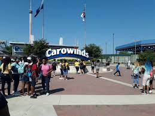
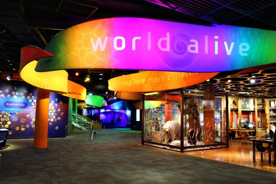
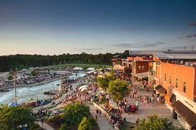
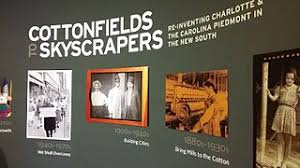
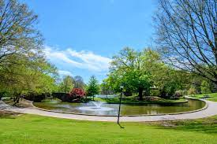
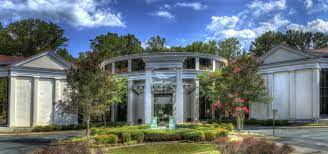
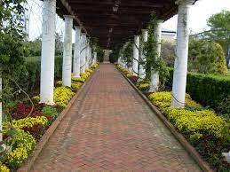

| Tourist Attractions | |
|---|---|
Charlotte MotorspeedwayA motorsport complex built in 1959 by Bruton Smith located in Concord, just outside of Charlotte. The speedway is considered the home track for NASCAR with many race teams located in the Charlotte area. The complex features a 1.5 mi (2.4 km) quad oval track that hosts NASCAR racing. |
|
|  | CarowindsCarowinds is a 407-acre amusement park located adjacent to Interstate 77 in Charlotte, North Carolina and opened on March 31, 1973. The park straddles the North Carolina-South Carolina state line, with a portion of the park located in Fort Mill, South Carolina. It is the result of a four-year planning period spearheaded by Charlotte businessman Earl Patterson Hall. Carowinds also features a 27-acre (110,000 m2) water park, Carolina Harbor, which is included with park admission. The park has a Halloween event called SCarowinds and a winter event called WinterFest. |
|  | Discovery PlaceDiscovery Place Science is a science and technology museum for all ages, opened in 1981 and located in Uptown, Charlotte, North Carolina. The facility's exhibits and activities focus on hands-on experiences. It has a "Thinker Space" and labs, a two story urban rain forest, aquariums, live animal exhibits, stages for demonstrations, space for traveling exhibits, and event space. Discovery Place Science also operates The Charlotte Observer IMAX Dome Theater, sometimes referred to as an OMNIMAX theater. The IMAX Dome was opened in 1991 and is the largest IMAX Dome Theater in the Carolinas. |
|  | U.S. National Whitewater CenterThe U.S. National Whitewater Center (USNWC) is a non-profit outdoor recreation and athletic training facility for whitewater rafting, kayaking, canoeing, rock climbing, mountain biking hiking and ice skating which opened to the public on 2006. It has the world's largest and most complex recirculating artificial whitewater river. The Center is located in Charlotte, North Carolina on approximately 1,300 acres of land adjacent to the Catawba River, with more than 45 miles (72 km) of developed trail. |
|  | Levine Museum of the New SouthThe Levine Museum of the New South display's concentrate on post-Civil War social and political changes in southern culture and the individuals who took part in it. The exhibits tend to focus on the rapid population growth and economic shift from Agricultural to industrial in Charlotte during Reconstruction and the Civl Rights Movement. |
The Mint Museum of ArtOpening in 1963, the Mint Museum was the first art museum in North Caroina and since has been the largest visual arts institution in Charlotte. The permanent collections include American Art, Ancient American Art, American and European ceramics, American and European Decorative Art, North Carolina Pottery, historic costume and fashionable dress and accessories, African Art, Asian Art, historic maps, Contemporary art, and photography. The institution actually contains two museum locations, Randolph and Uptown, as well as their companion Mint Museum of Craft + Design who focuses on contemporary craft. |
|
|  | Freedom ParkCharlotte's Biggest Park in Mecklenburg county, taking up around 98 acres. The Park was originally built 1948, right after World War II, to honor veterans. It has multiple trails, sports courts, fields, and obstacle courses for children, as well as a huge indoor area used for community activities. |
NASCAR Hall of FameNASCAR committed to building a Hall of Fame and on March 6, 2006, the City of Charlotte was selected as the location. The NASCAR Hall of Fame honors NASCAR drivers, crew chiefs, broadcasters, and contributors of exeptional skill. In addition to the Hall of Fame, the NASCAR Plaza, a 20-story office building, opened in May 2009. |
|
|  | Charlotte Museum of HistoryThe Charlotte Museum of History is a history museum located in Charlotte, North Carolina. Originally founded to be the steward of the 1774 Alexander Rock House, the museum has since expanded its scope to cover all periods of Charlotte's history with exhibits covering everything from the history of music in the city to the experiences of soldiers from Charlotte during the 1st World War. The museum was intially under the Mint Museum, bring called the Mint Museum of History until 1985 where the Mint Museum planned to concentrate on the fine arts rather than history. |
|  | Daniel Stowe Botanical GardenDaniel Stowe Botanical Garden is a botanical garden located on 380 acres in Belmont, North Carolina. The Botanical Garden is dedicated to the study and conservation of plants, as well as showing diverse plant species to the public. Founded by Daniel J. Stowe, a retired textile executive from Belmont. As of March 2022, there are eight complete gardens: the Four Seasons Garden, White Garden, Cottage Garden, Canal Garden, Lost Hollow, Dry Piedmont Prairie, Orchid Conservatory, and the Garden Trails. |